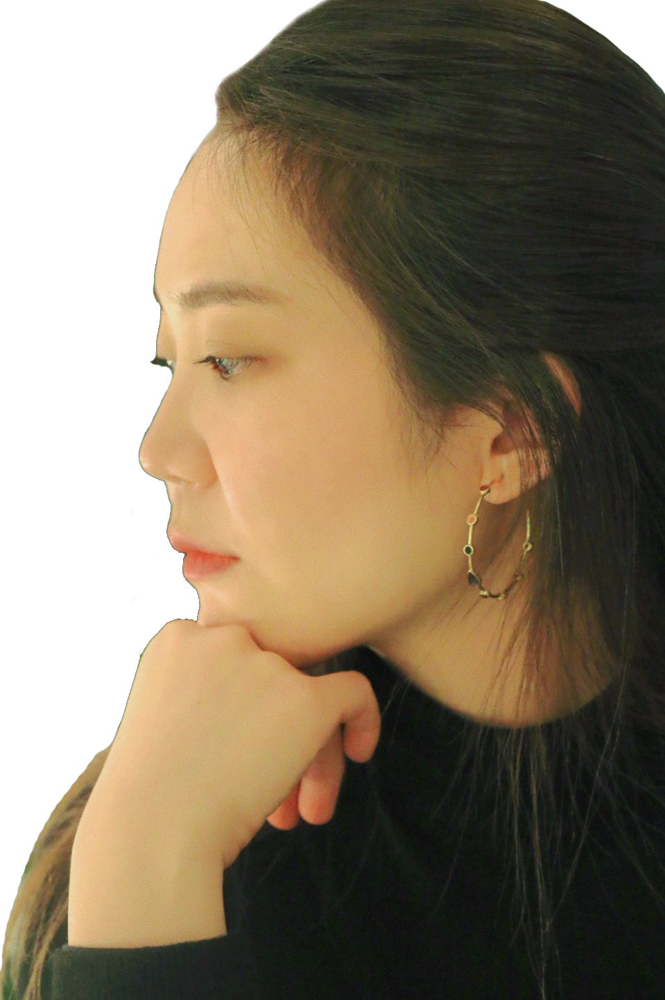

Chanjoo Tiffany Park is South Korean-American designer and artist from Seoul, currently based in New York. She recently turned 23, was born in the suburbs of Chicago, Vernon Hills, Illinois and currently resides in Manhattan, attending college as a senior at Parsons studying Communication Design and minoring in Creative Entrepreneurship. Moving back and forth from Seoul to New York every year, she likes being called by her first name Chanjoo only by Koreans or who can pronounce her name properly, otherwise she prefers being called Tiffany. She will introduce herself as Tiffany when she does not want to stand out and in settings where she prefers to be anonymous. Her background is in traditional fine arts such as painting and drawing, and used to study fashion design, having experiences in machine sewing, pattern making, draping, and hand knitting. Her current skillsets in design are, Photoshop, Illustrator, InDesign, After Effects, and little bit of coding. She is interested in exploring back and forth from traditional analog medium to digital media.
Thursday September 19th, 5:00PM in New York, NY 10003